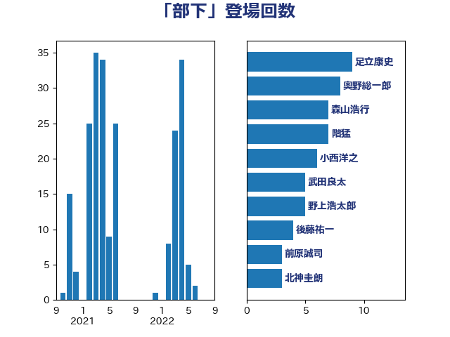

単語「部下」

| 足立康史 | 日本維新の会 | 9 回 |
| 奥野総一郎 | 立憲民主党 | 8 回 |
| 森山浩行 | 立憲民主党 | 7 回 |
| 階猛 | 立憲民主党 | 7 回 |
| 小西洋之 | 立憲民主党 | 6 回 |
| 武田良太 | 自由民主党 | 5 回 |
| 野上浩太郎 | 自由民主党 | 5 回 |
| 後藤祐一 | 立憲民主党 | 4 回 |
| 前原誠司 | 国民民主党 | 3 回 |
| 北神圭朗 | 無所属 | 3 回 |
| 城井崇 | 立憲民主党 | 3 回 |
| 河野太郎 | 自由民主党 | 3 回 |
| 上田清司 | 国民民主党 | 2 回 |
| 中谷一馬 | 立憲民主党 | 2 回 |
| 加藤勝信 | 自由民主党 | 2 回 |
| 吉田統彦 | 立憲民主党 | 2 回 |
| 東徹 | 日本維新の会 | 2 回 |
| 松沢成文 | 日本維新の会 | 2 回 |
| 沢田良 | 日本維新の会 | 2 回 |
| 浅野哲 | 国民民主党 | 2 回 |
| 田村憲久 | 自由民主党 | 2 回 |
| 金子恭之 | 自由民主党 | 2 回 |
| 高橋光男 | 公明党 | 2 回 |
| おおつき紅葉 | 立憲民主党 | 1 回 |
| 上川陽子 | 自由民主党 | 1 回 |
| 上田英俊 | 自由民主党 | 1 回 |
| 伊藤岳 | 日本共産党 | 1 回 |
| 勝部賢志 | 立憲民主党 | 1 回 |
| 古川禎久 | 自由民主党 | 1 回 |
| 古賀友一郎 | 自由民主党 | 1 回 |
| 吉良州司 | 無所属 | 1 回 |
| 嘉田由紀子 | 無所属 | 1 回 |
| 大塚耕平 | 国民民主党 | 1 回 |
| 大島敦 | 立憲民主党 | 1 回 |
| 守島正 | 日本維新の会 | 1 回 |
| 宮本岳志 | 日本共産党 | 1 回 |
| 宮本徹 | 日本共産党 | 1 回 |
| 小川淳也 | 立憲民主党 | 1 回 |
| 小林茂樹 | 自由民主党 | 1 回 |
| 岡本あき子 | 立憲民主党 | 1 回 |
| 岸信夫 | 自由民主党 | 1 回 |
| 後藤田正純 | 自由民主党 | 1 回 |
| 本庄知史 | 立憲民主党 | 1 回 |
| 本田顕子 | 自由民主党 | 1 回 |
| 杉本和巳 | 日本維新の会 | 1 回 |
| 林芳正 | 自由民主党 | 1 回 |
| 根本幸典 | 自由民主党 | 1 回 |
| 梶山弘志 | 自由民主党 | 1 回 |
| 熊谷裕人 | 立憲民主党 | 1 回 |
| 田島麻衣子 | 立憲民主党 | 1 回 |
| 盛山正仁 | 自由民主党 | 1 回 |
| 磯崎仁彦 | 自由民主党 | 1 回 |
| 福山哲郎 | 立憲民主党 | 1 回 |
| 福田昭夫 | 立憲民主党 | 1 回 |
| 稲富修二 | 立憲民主党 | 1 回 |
| 稲津久 | 公明党 | 1 回 |
| 穀田恵二 | 日本共産党 | 1 回 |
| 緒方林太郎 | 無所属 | 1 回 |
| 舩後靖彦 | れいわ新選組 | 1 回 |
| 菅直人 | 立憲民主党 | 1 回 |
| 菅義偉 | 自由民主党 | 1 回 |
| 赤羽一嘉 | 公明党 | 1 回 |
| 足立敏之 | 自由民主党 | 1 回 |
| 野田国義 | 立憲民主党 | 1 回 |
| 鈴木淳司 | 自由民主党 | 1 回 |
| 長妻昭 | 立憲民主党 | 1 回 |
| 音喜多駿 | 日本維新の会 | 1 回 |
| 高野光二郎 | 自由民主党 | 1 回 |